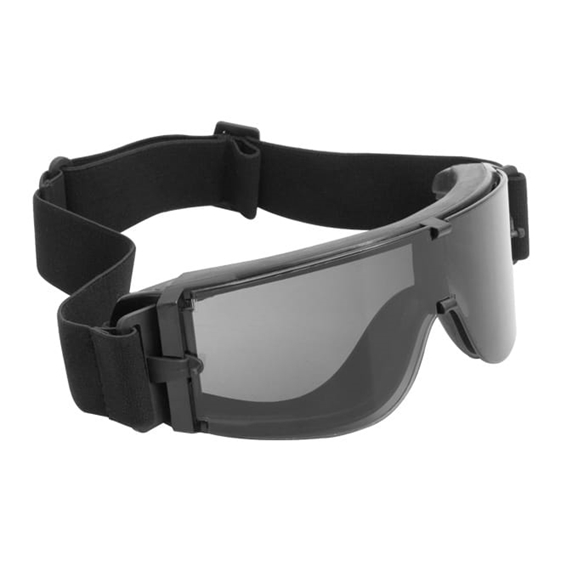
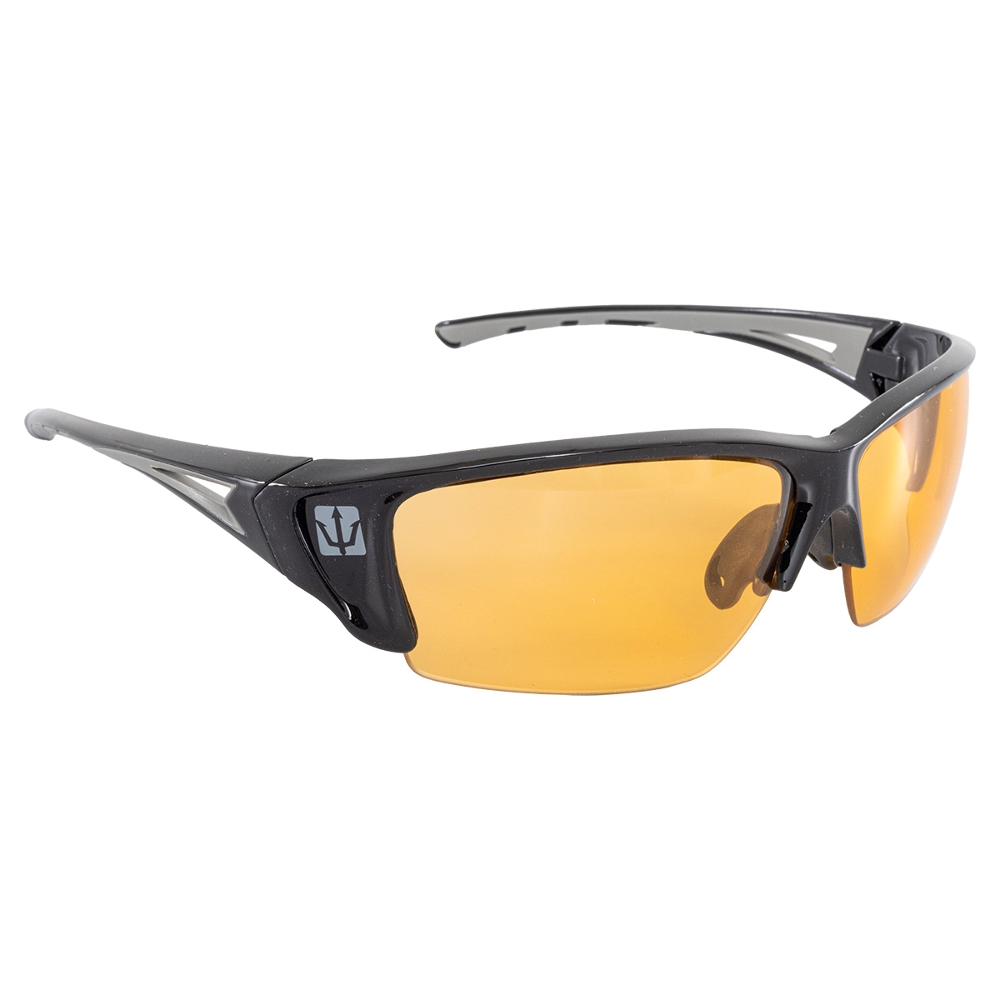
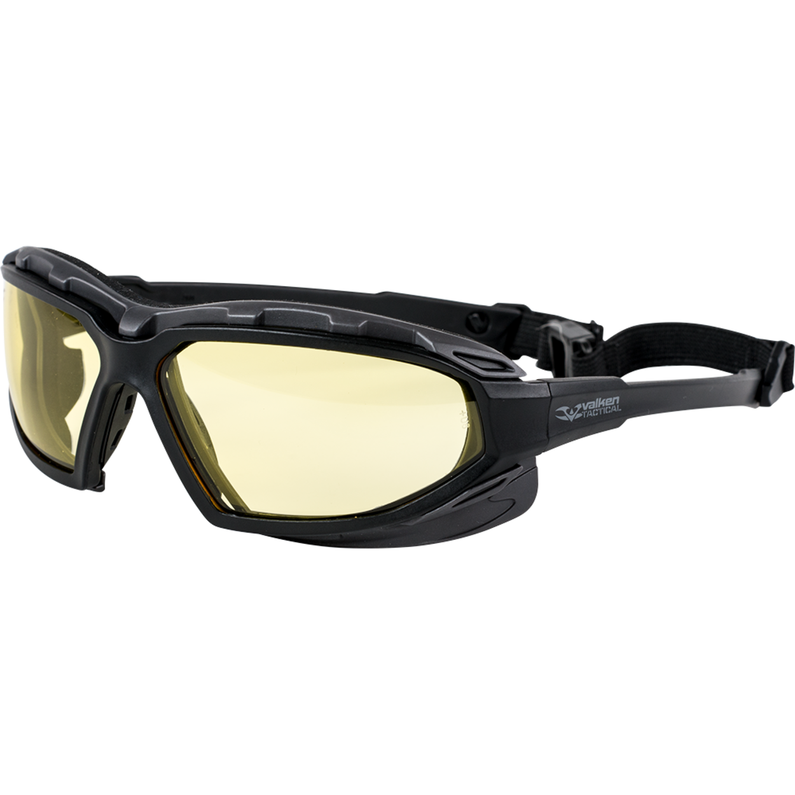
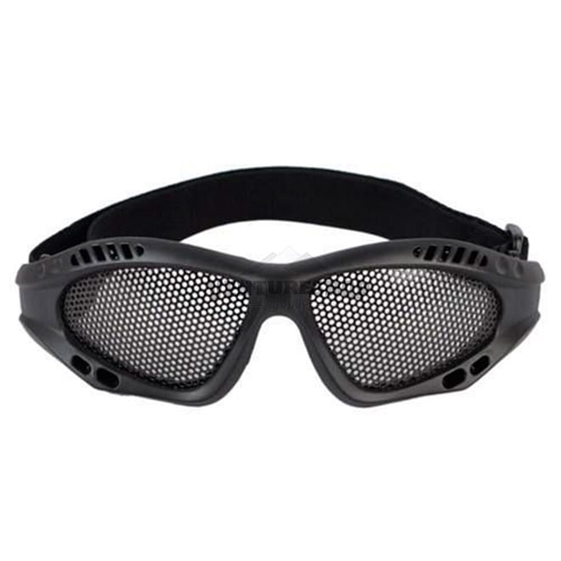
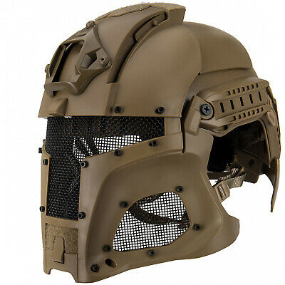
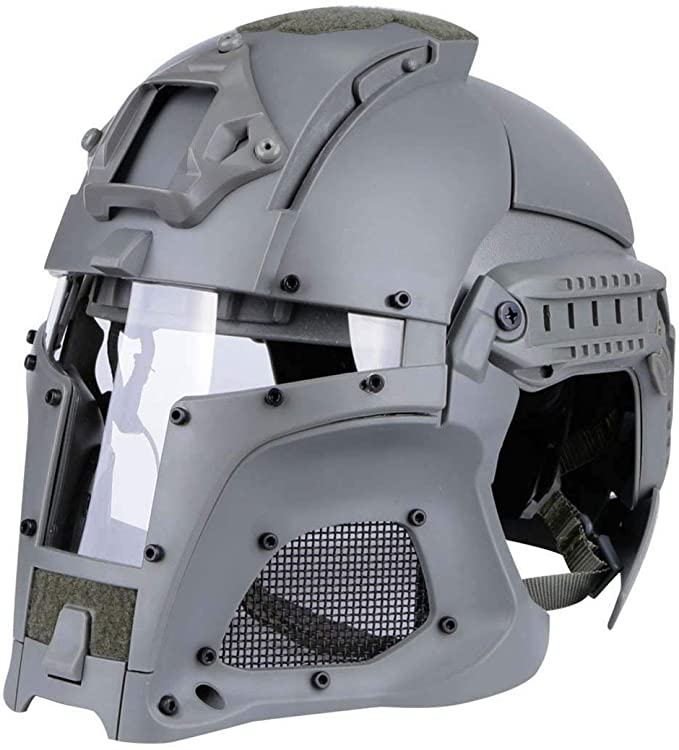
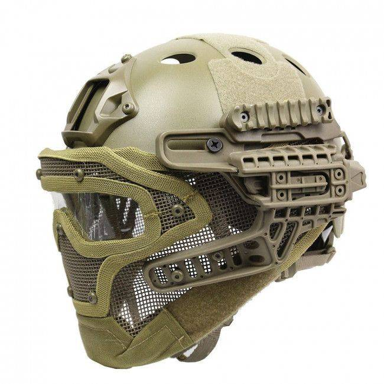

Equipamentos de Segurança
Os equipamentos de proteção são indispensáveis para a prática de Airsoft. Eles servem para evitar que acidentes ocorram durante a prática do esporte.
Óculos de proteção
- 
- 
- 

- 
O óculos de proteção é um item obrigatório quando se trata de praticar airsoft,
ele evita que danos irreversíveis possam acontecer aos olhos durante uma partida.
Hoje em dia no mercado há óculos específicos para quem prática o airsoft, normalmente
esses óculos contam com armação e lentes mais resistentes além de tecnologia
antiembaçante.
Máscara de proteção
A máscara serve para proteger o rosto de ferimentos ou até mesmo evitar que o praticante
quebre o dente ao ser atingido por um disparo de airsoft. Também é considerado um item
indispensável.
A máscara não é um item obrigatório.
Capacete

- 
- 
- 
O capacete protege a cabeça do jogador de disparos que possam atingí-la.
O
capacete não é um item obrigatório.
Colete plate
O colete serve para que o tronco do jogador não seja atingido por disparos durante o
jogo, também tem a função de carregar assessórios que lhe auxiliarão durante o decorrer
da partida.
O colete não é um item obrigatório.
Joelheira
A joelheira servem para proteger os joelhos do jogador e também para dar estabilidade ao
ajoelhar durante o jogo.
A joelheira não é um item obrigatório.
Luvas
A luva serve para manter as mãos aquecidas e protegê-las de disparos e espinhos a
depender do campo onde esteja acontecendo a partida.
A luva não é um item
obrigatório